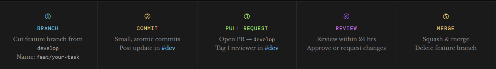

Project Plan: Economic Drivers of Migration Patterns in the United States
Plan.1. Admin
App Title:
Economic Drivers of Migration Patterns in the United States
Group Members:
- Eric Ekman (DATA 613)
- Ambrose Bonney (DATA 613)
- Ian Chandramouli (DATA 613)
Plan.2. Topic and Data
2.1 Context of the Problem
Population migration within the United States has significant implications for regional economies, public policy, and infrastructure planning.
Changes in where people live affect labor markets, housing demand, tax revenue, and the allocation of public services such as transportation, education, and healthcare.
For example, population inflows may increase demand for housing and strain local infrastructure. In contrast, population outflows can reduce a region’s tax base and economic activity.
Economic factors are widely considered key drivers of migration decisions. Differences in cost of living - particularly housing costs, wages, and tax burdens- may influence where individuals choose to relocate by affecting their overall financial well-being and quality of life.
Rising housing costs or stagnant wages in one region may encourage out-migration, while more affordable or economically favorable regions may attract new residents.
This project explores how these economic factors are associated with migration patterns across U.S. states and counties.
By integrating migration data with measures of housing costs, wages, and taxes, the app allows users to examine how variation in cost-of-living factors corresponds to differences in population movement.
2.2 Literature Review
Prior research has identified economic factors such as housing costs, wages, and tax differences as potentially important drivers of migration patterns within the United States.
Molloy, Smith, and Wozniak (2011) review trends in internal migration in the United States and note that, while economic theory emphasizes labor market opportunities as a primary driver of migration, empirical evidence is less conclusive.
The authors find that recent declines in migration are not fully explained by economic factors, suggesting that migration decisions are influenced by a broader set of factors beyond just economic incentives.
Key takeaway: Economic factors are important in theory, but may not fully explain observed migration patterns in practice.
Molloy, R., Smith, C. L., & Wozniak, A. (2011). Internal migration in the United States. Journal of Economic perspectives, 25(3), 173-196.
Ganong and Shoag (2017) examine the decline in regional income convergence in the United States and argue that changes in housing markets play a key role in shaping migration patterns.
The authors show that, while higher-income regions historically attracted workers from lower-income areas, rising housing costs, driven in part by increasingly restrictive land use regulations, have reduced migration into these regions.
As housing prices rise, the economic benefits of moving to high-income areas are offset, particularly for lower-income individuals, limiting their ability to relocate.
Key takeaway: High housing costs can constrain migration and reduce movement toward high-income regions, even when economic opportunities are greater.
Ganong, P., & Shoag, D. (2017). Why has regional income convergence in the US declined?. Journal of Urban Economics, 102, 76–90.
Young and Varner (2011) examine the relationship between state income taxes and migration, focusing on high-income individuals.
Using detailed tax micro-data and a difference-in-differences approach, the authors analyze how a substantial increase in top tax rates in New Jersey affected the migration behavior of millionaires.
The authors find minimal overall responsiveness of high-income individuals to the tax increase, indicating that even large changes in tax rates have little effect on migration for this group.
While most individuals show little response, the authors identify heterogeneity in migration behavior, with stronger effects among retirees, individuals living on investment income, and those whose earnings are tied entirely to a single state.
Key takeaway: State taxes have little overall effect on migration among high-income individuals, though responses vary across subgroups depending on individual circumstances.
Young, C., & Varner, C. (2011). Millionaire migration and state taxation. National Tax Journal, 64(2), 255–284.
Together, these studies suggest that the relationship between economic factors and migration patterns is more complex than simple economic theories might predict.
Economic models often propose that individuals relocate in response to financial incentives such as higher wages, lower taxes, or lower costs of living. However, empirical evidence indicates that these factors do not always translate into large migration responses.
Molloy, Smith, and Wozniak (2011) find that economic variables alone do not fully explain observed migration trends in the United States. Ganong and Shoag (2017) show that rising housing costs in high-income regions can constrain migration, limiting the ability of individuals to move toward higher-wage areas. Young and Varner (2011) find that tax differences have little overall effect on migration among high-income individuals, although certain subgroups(such as retirees and those with investment income) appear to be more responsive.
Taken together, these findings highlight a gap between theoretical expectations and observed migration behavior. This project seeks to explore that gap by allowing users to examine how economic variables such as housing costs, wages, and taxes are associated with migration patterns across U.S. regions. —
2.3 Proposed Data Sources
To examine how economic factors are associated with migration patterns, this project will integrate multiple publicly available datasets.
These datasets correspond to the outcome variable (migration) and key predictors (housing costs, wages, and taxes).
2.3.1 Overview of Data Sources
Outcome | U.S. Census Migration Data | State-to-state migration flows based on survey data |
Predictor | Zillow Housing Data | Home values (ZHVI) and rental price estimates (ZORI) |
Predictor | BLS Wage Data | Wage and employment statistics by state and county |
Predictor | State Tax Data | State income tax rates and tax structure measures |
2.3.2 Data Source Details
U.S. Census Migration Data (Outcome Variable)
Link: https://www.census.gov/data/tables/time-series/demo/geographic-mobility/state-to-state-migration.html
Migration data will be obtained from the U.S. Census Bureau, which provides state-to-state migration flows based on nationally representative survey data.
These data measure geographic mobility using respondents’ current residence compared to their residence one year prior, allowing for the estimation of migration flows between states.
The dataset includes recent observations (2023–2024), meeting the requirement for current, real-world data.
The data cover all U.S. states and include large sample sizes, enabling analysis of migration patterns across regions.
These measures will be used as the primary outcome variable in examining how economic factors such as housing costs, wages, and taxes are associated with population movement.
Zillow Housing Data (Housing Costs)
Link: https://www.zillow.com/research/data/
Housing costs will be measured using multiple indicators to capture different dimensions of affordability.
The Zillow Home Value Index (ZHVI) represents the typical home value in a region and serves as a proxy for the cost of homeownership.
The Zillow Observed Rent Index (ZORI) measures typical rental prices and captures the cost of renting.
Using both measures allows the analysis to distinguish between housing cost pressures faced by homeowners and renters, providing a more comprehensive representation of housing affordability.
BLS Wage Data (Wages and Employment)
Link: https://www.bls.gov/data/
Wage and employment data will be obtained from the Bureau of Labor Statistics (BLS), which provides regularly updated economic data at national, state, and local levels.
This project will primarily use data from the Quarterly Census of Employment and Wages (QCEW), which includes average wages and employment levels by county and state.
These data are updated quarterly and include recent observations (2023–present), meeting the requirement for current, real-world data.
The dataset contains thousands of observations across geographic units and industries, making it well-suited for analyzing regional economic variation.
State Tax Data (Tax Burden)
Link: https://taxfoundation.org/data/all/state/state-income-tax-rates/
State tax data will be obtained from the Tax Foundation, which provides comprehensive and regularly updated information on state income tax rates and structures.
The dataset includes top marginal income tax rates, tax brackets, standard deductions, and personal exemptions for all U.S. states. These measures allow for comparison of tax systems across states, including differences between states with no income tax, flat tax structures, and graduated-rate systems.
The data are updated annually and include recent observations (2023–2026), meeting the requirement for current, real-world data. Individual income taxes are a major source of state revenue and vary substantially across states, making them a useful proxy for differences in tax burden.
These variables will be used to construct measures of relative tax burden across states for use in exploratory analysis and regression models.
Plan.3. Use Case
3.1 Actor Description
The primary user is a policy analyst or economic researcher interested in understanding migration patterns across U.S. states.
These users seek to explore how populations shift across regions and how economic conditions such as housing costs, wages, and taxes may be associated with those changes.
They are likely familiar with basic data analysis and interpretation but benefit from tools that allow them to explore data interactively and evaluate relationships between variables without requiring extensive data preparation or programming.
3.2 Actor Questions of Interest
- Which states are experiencing net population gains or losses?
- How are housing costs associated with migration patterns across states?
- Are higher wages associated with increased inbound migration?
- How are differences in state tax structures associated with migration patterns?
- To what extent do housing costs, wages, and taxes jointly explain variation in migration patterns across states?
3.3 Anticipated Workflow
- The user selects one or more U.S. states (up to three) to explore and compare.
- The user selects a year of interest.
- The app displays inbound, outbound, and net migration flows for the selected states and year using maps and summary tables.
- The user explores economic indicators across selected states, including housing costs, wages, and state tax measures, through interactive plots.
- The app displays scatterplots showing the relationship between selected economic variables and migration measures.
- The user selects one or more economic variables for modeling.
- The app estimates a regression model and displays results, including coefficients and summary metrics.
- The user compares selected states to evaluate how economic factors are associated with differences in migration patterns.
Plan.4. Ethical Review
This project will use publicly available, aggregated data that does not include personally identifiable information (PII).
Ethical considerations are guided by the American Statistical Association (ASA) Ethical Guidelines.
Data Privacy
All datasets used in this project are aggregated at the state level and sourced from publicly available government or research organizations.
No individual-level data will be used, ensuring that privacy risks are minimal and that no PII is exposed.
Bias and Limitations
The data sources used may contain measurement error, sampling bias, or differences in methodology across sources.
Additionally, migration patterns are influenced by many factors beyond those included in this project, such as social, geographic, and cultural considerations.
These limitations will be acknowledged to avoid over interpretation of results.
Interpretation and Causality
The analysis is based on observational data and will focus on identifying associations rather than causal relationships.
Care will be taken to avoid implying that economic variables directly cause migration outcomes.
Responsible Communication
Results will be presented in a clear and transparent manner, including appropriate labeling of variables, explanation of methods, and discussion of limitations.
Visualizations will be designed to avoid misleading representations of data.
These considerations align with the American Statistical Association (ASA) Ethical Guidelines, including principles of professional integrity and accountability (Principle A), integrity of data and methods (Principle B), and responsibilities to data subjects (Principle D).
In particular, this project emphasizes the use of appropriate data, acknowledgment of limitations, careful interpretation of results, and clear, honest communication to ensure that findings are presented in a responsible and meaningful way.
Plan.5. App Concept
5.1 General Layout
The app will be organized into the following sections:
Exploratory Analysis Variable Selections
Migration Overview (maps and flow visualization)
Map Visualization
Summary Statistics Table for Selected Variables
Economic Indicators Interactive Plots (housing, wages, taxes)
An Over-time Plot faceted by state
A Scatterplot where two continuous variables can be selected
A Bar plot for tax structure vs migration numbers
Regression Variable Selections
Modeling (regression analysis)
Regression Summary Table Output
Scatterplot between variables and migration values, faceted by predictor if multiple variables are used.
5.2 User Data Selection and Manipulation
Filtering:
- Users will be able to select up to 3 states or regions to compare using the map visualization, and a time range using a slider
EDA Selection/Manipulation:
- Users will be able to select two variables to compare for the scatterplots and over-time plot.
- Users will be able to select a categorical variable to compare in the bar chart
Regression Selection/Manipulation:
- Users will be able to select predictor variables to include in the model
5.3 Exploratory Analysis
- Migration flow maps
- A Map visualization where users can see migration flow numbers for each state. This visualization may also be used as an input to perform filtering on states.
- Interactive economic plots
- Over-time Plot: users can visualize a line plot of trends over time for selected variables. A checkbox allows a second axis to be created using the second continuous variable selected if, for example, the user wishes to see migration numbers and wages trending over the same time period. The plot will be faceted by state and the color aesthetic will map to the respective variables.
- Scatterplots: the two continuous variables are plotted against each other, so end-users can visualize relationships between variables either for exploration, or to highlight potential collinearity patterns between predictors. Users will optionally be able to add a smoother and can optionally add a color aesthetic to distinguish between states.
- Categorical Bar Plot: users can select categorical variables to use to compare states in the bar plot.
- A summary statistics table will capture summary statistics for selected variables.
5.4 Statistical Models
- A Linear Regression model will predict net migration as a function of the user-selected predictor variables. This selection will be separate from the exploratory variable selection.
- Outputs included in the Table Output will include model coefficients, R² values, and other summary statistics from the regression model
- There will be a Scatterplot visualization of the predictors versus the net migration with a linear smoother. For multiple predictor variables, the visualization will be faceted by predictor.
- Users will have the ability to log-transform variables in the model for analysis.
- Optional extensions for further exploration:
- Add the ability to add interaction terms
Plan.6. Collaboration
6.1 Responsibilities
| Task | Primary | Secondary |
|---|---|---|
| Data acquisition (IRS) | Ambrose | |
| Data acquisition (Zillow) | Ambrose | |
| Data cleaning | Ambrose | |
| App UI | Ian | |
| Server logic | Eric | |
| Modeling | Eric | |
| Documentation | Eric |
6.2 Team Workflow
| Action | Purpose | Phase | Lead | Date |
|---|---|---|---|---|
| Kick-off meeting & requirements gathering | Define app purpose, target users, key features, and success criteria | Phase 01 — Discovery & Planning | All | Mar 19–22 |
| Set up GitHub repo, branching strategy, and project board | main / develop / feature branches · GitHub Issues for task tracking | Phase 01 — Discovery & Planning | Mar 19–22 | |
| Audit data sources & define data model | Identify input datasets, formats, and any cleaning needed | Phase 01 — Discovery & Planning | Amborose | Mar 19–22 |
| Wireframes & UI mockups | Layout, tab structure, and key reactive widgets | Phase 01 — Discovery & Planning | IAN | Mar 19–22 |
| Design review & sign-off on scope | Finalise feature list · and agree on communication | Phase 01 — Discovery & Planning | All | Mar 19–22 |
| Scaffold Shiny app with modules architecture | app.R, global.R, R/modules/ · renv lockfile for reproducibility | Phase 02 — Core Development | Eric | Mar 23 – Apr 5 |
| Build data ingestion & processing pipeline | ETL scripts in R · reactive data objects · caching strategy | Phase 02 — Core Development | Ambrose | Mar 23 – Apr 5 |
| Implement UI shell — layout, navigation, theming | Input and output | Phase 02 — Core Development | Ian | Mar 23 – Apr 5 |
| Write server-side reactive logic | Reactive expressions, observers, eventReactive · data transformations | Phase 02 — Core Development | Eric | Mar 23 – Apr 5 |
| Build core visualisation components | ggplot2 / plotly / DT tables · interactive controls (sliders, filters) | Phase 02 — Core Development | Ian | Mar 23 – Apr 5 |
| Write unit tests for modules & helper functions | testthat + shinytest2 · set up CI workflow on GitHub Actions | Phase 02 — Core Development | Eric | Mar 23 – Apr 5 |
| Weekly sync — mid-build review | Demo progress · surface blockers · re-prioritise if needed | Phase 02 — Core Development | All | March 30 |
| Integration sprint — merge all feature branches | Resolve merge conflicts · end-to-end smoke test on shared branch | Phase 03 — Integration & Testing | All | Apr 6–13 |
| Run full shinytest2 regression suite | Fix failing tests · document any known edge cases | Phase 03 — Integration & Testing | Eric | Apr 6–13 |
| Usability testing & accessibility pass | Test on multiple browsers · check colour contrast · tooltip copy | Phase 03 — Integration & Testing | Ian | Apr 6–13 |
| Performance profiling & optimisation | Phase 03 — Integration & Testing | Ambrose | Apr 6–13 | |
| Final UI polish & copy review | Labels, help text, loading spinners, error messages | Phase 04 — Polish & Release | Ian | Apr 14–20 |
| Write README and user documentation | Installation instructions, feature overview, data dictionary | Phase 04 — Polish & Release | Eric | Apr 14–20 |
| Final walkthrough & sign-off | Confirm all acceptance criteria met · tag v1.0.0 release on GitHub | Phase 04 — Polish & Release | All | Apr 14–20 |

- Each member will work on separate branches
- Pull requests required before merging
- Merge only working code into
main
- Integrate changes at least weekly
6.3 Schedule
| Milestone | Date |
|---|---|
| Finalize data sources | March 22, 2026 |
| Complete data cleaning | March 28, 2026 |
| Initial app prototype | April 2, 2026 |
| Model implementation | April 9, 2026 |
| Code freeze | April 15, 2026 |
| Final vignette | April 20, 2026 |